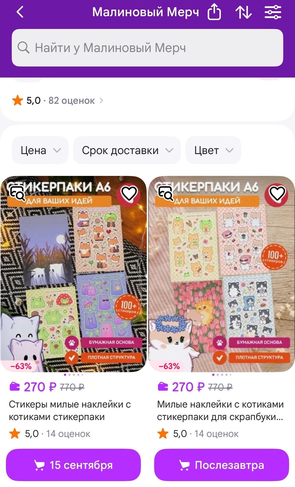
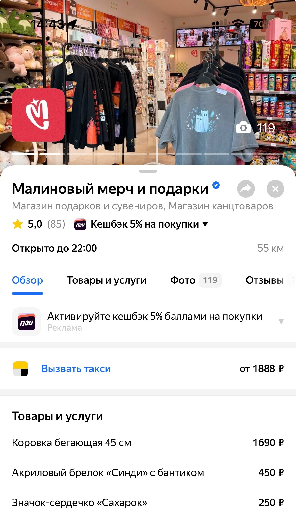
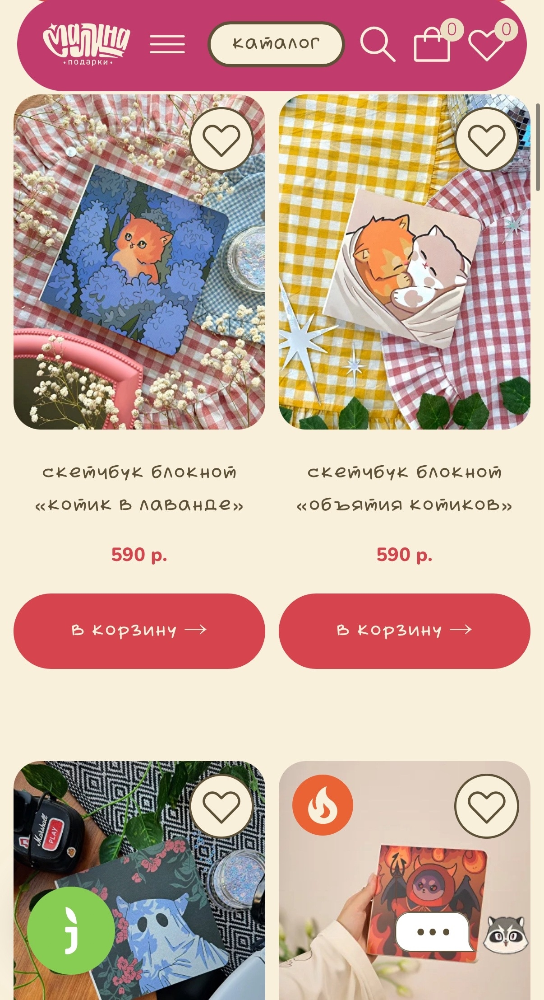

Развивать онлайн-присутствие бренда и дополнительные каналы продаж.
Сайт — структура и тексты, наполнение каталога, фотографии товаров, контент.
Wildberries — запуск карточек, предметная съёмка, описания, SEO-формулировки.
Яндекс Карты / 2ГИС — актуализация информации, товары и фотографии, работа с отзывами, продвижение.


